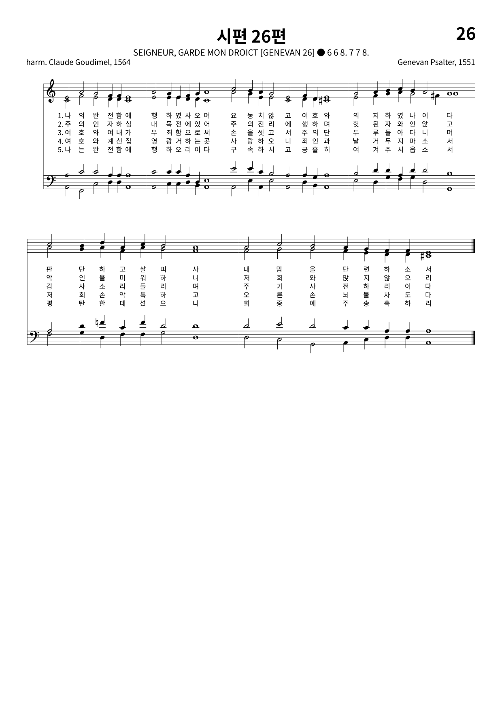

시편 26편
SEIGNEUR, GARDE MON DROICT [GENEVAN 26] · 6 6 8. 7 7 8.
곡조: Genevan Psalter, 1551 · 화성: Claude Goudimel, 1564 · 가사: 개역한글판 시편 26편 편역(AI 초벌 편역판 · 신학 감수 전) · 5절
악보 PDF MusicXML(출력용) MusicXML(반주용, 전주·반복 포함) 개역한글 시편 26편 읽기

가사
1절
나의 완전함에
행하였사오며
요동치 않고 여호와
의지하였나이다
판단하고 살피사
내 맘을 단련하소서
나의 완전함에
행하였사오며
요동치 않고 여호와
의지하였나이다
판단하고 살피사
내 맘을 단련하소서
2절
주의 인자하심
내 목전에 있어
주의 진리에 행하며
헛된 자와 안 앉고
악인을 미워하니
저희와 앉지 않으리
주의 인자하심
내 목전에 있어
주의 진리에 행하며
헛된 자와 안 앉고
악인을 미워하니
저희와 앉지 않으리
3절
여호와여 내가
무죄함으로써
손을 씻고서 주의 단
두루 돌아다니며
감사 소리 들리며
주 기사 전하리이다
여호와여 내가
무죄함으로써
손을 씻고서 주의 단
두루 돌아다니며
감사 소리 들리며
주 기사 전하리이다
4절
여호와 계신 집
영광 거하는 곳
사랑하오니 죄인과
날 거두지 마소서
저희 손 악특하고
오른손 뇌물 차도다
여호와 계신 집
영광 거하는 곳
사랑하오니 죄인과
날 거두지 마소서
저희 손 악특하고
오른손 뇌물 차도다
5절
나는 완전함에
행하오리이다
구속하시고 긍휼히
여겨 주시옵소서
평탄한 데 섰으니
회중에 주 송축하리
나는 완전함에
행하오리이다
구속하시고 긍휼히
여겨 주시옵소서
평탄한 데 섰으니
회중에 주 송축하리